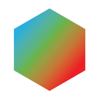

Host Star
Sun
G-TYPE MAIN SEQUENCE · OUR STAR
The Sun is a colossal nuclear furnace at the heart of our solar system, fusing hydrogen into helium and radiating energy that drives all life on Earth.
FINAL VIDEO PLACEHOLDER

Core software used for 3D modeling, texturing, and rendering the celestial bodies and their orbital paths.

Essential asset library used to source high-fidelity 8K textures and materials for realistic planetary surfaces.

Utilized for final video post-processing, color grading, and adding atmospheric sound effects to the simulation.

STEP 01
Create a UV Sphere with high segments for smooth curvature. This serves as the base geometry for all planets.

STEP 02
I utilized the BlenderKit add-on to source high-resolution 8K planetary textures, including surface, cloud, and bump maps.

STEP 03
Added a slightly larger secondary sphere with Fresnel transparency and volume scatter to simulate the planet's atmosphere.

STEP 04
I developed custom Python scripts to automate the orbital rotation and revolution, ensuring scientifically accurate planetary motion.
G-TYPE MAIN SEQUENCE · OUR STAR
The Sun is a colossal nuclear furnace at the heart of our solar system, fusing hydrogen into helium and radiating energy that drives all life on Earth.